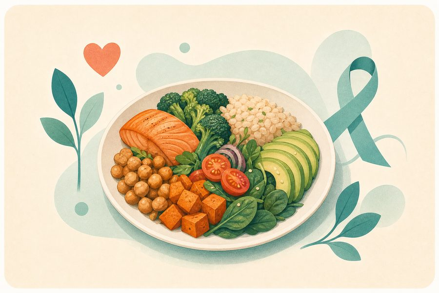

Eating Patterns Awareness Survey
A general educational survey to raise awareness of some eating patterns and relationship with food; not a diagnostic tool.

How to read the result?
The result is an awareness indicator based on your answers, not a diagnosis or final judgment. If symptoms persist or affect your life, book an appointment with your doctor or an appropriate specialist.
Source of the original tool
Frequently asked questions about the Eating Patterns Awareness Survey
Brief answers to help you understand the tool's limitations and use it more wisely.
What is the purpose of the Eating Patterns Awareness Survey?
It helps you notice your relationship with food, emotions, and daily behaviors; it is not a diagnostic or medical classification.
Does the result mean I have an eating disorder?
No. Answers may only indicate an issue worth discussing; a proper assessment requires a trained professional and should be non-stigmatizing.
How do I use the result safely?
Use it to start a gentle conversation with a professional or someone you trust. Avoid strict dieting, compensatory behaviors, or monitoring food in ways that increase anxiety.
When should I seek urgent support?
Seek professional help for fainting, repeated vomiting, loss of control over eating, self-harming behaviors, or worsening mental health.